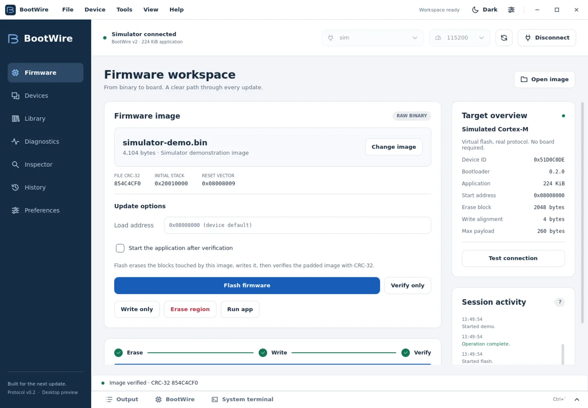
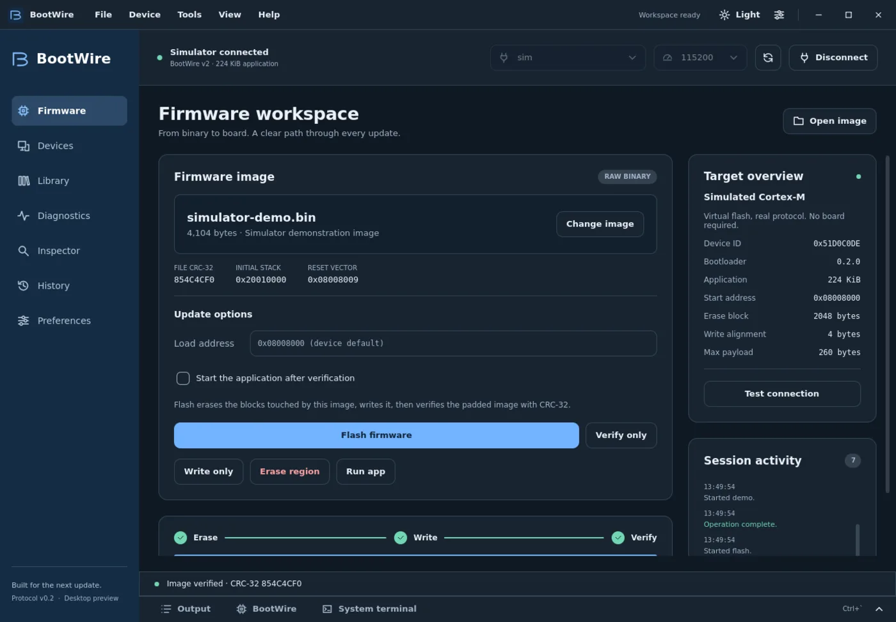

Latest
BootWire
Reliable firmware updates for ARM Cortex-M over UART. A small stop-and-wait protocol with CRC-checked SLIP frames and a reply cache, written up as a full specification with 28 diagrams, plus everything on the host side: a Python library, a CLI with a man page, a Debian package, a simulated target for testing without a board, and a desktop app with a live frame inspector.
- CRC-16 on every frame, read-back on every write, CRC-32 before the app may run
- Lost and damaged frames recovered without ever running a command twice
- 148 tests, including fault injection, on Linux and Windows CI

